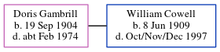

Doris Ellen Cowell (née Gambrill) 1904 - c1974
[ Home ] | [ Calendar ] | [ Surnames Index ] | [ Census Index ] | [ Family History ]Doris Gambrill, the wife of William John Cowell (the first cousin once-removed on the mother's side of Nigel Horne), was born in Elham, Kent, England on Sep 19, 19041,2. She married William (a coal agricultural merchants truck driver) in Thanet, Kent, England around Aug 19533, which is also where she died c. Feb 19742.
Citations
- England & Wales births 1837-2006 - Findmypast
- England & Wales deaths 1837-2007 - Findmypast
- England & Wales marriages 1837-2008 - Findmypast
Media
England & Wales deaths 1837-2007 - BMD/D/1974/1/AZ/000272/082
England & Wales marriages 1837-2008 - BMD/M/1953/3/AZ/000583/079
England & Wales Births 1837-2006 - BMD-B-1904-4-AZ-000213-057
Family Tree
Generated by ged2site. Last updated on Jun 11, 2024